Katalog & Dosis TOGA Puskesmas Rawabogo
Scan barcode pada papan tanaman untuk informasi dosis lengkap.
Bagian Daun & Batang
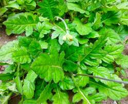
ID: #toga1
1. Daun Dewa
Muntah Darah
Dosis: Rebus 15-30g daun segar dengan 3 gelas air hingga sisa 1 gelas.
ID: #toga1
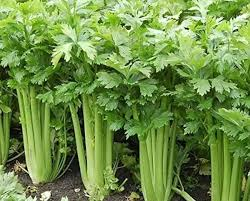
ID: #toga2
2. Seledri
Darah Tinggi
Dosis: Makan 2-3 tangkai segar setiap hari sebagai lalapan.
ID: #toga2
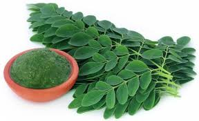
ID: #toga3
3. Daun Kelor
Panas Dalam
Dosis: Masak 1-2 genggam daun sebagai sayur bening.
ID: #toga3
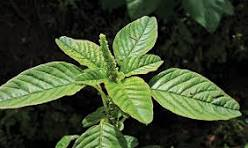
ID: #toga4
4. Daun Bayam Duri
Kurang Darah
Dosis: Rebus 1 genggam daun & akar dengan 2 gelas air sisa 1 gelas.
ID: #toga4
5. Saga
Batuk & Sariawan
Dosis: Rendam daun dalam air panas, gunakan untuk berkumur.
ID: #toga5
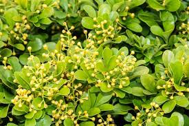
ID: #toga6
6. Pacar Cina
Penyakit Kelamin
Dosis: Rebus 10g daun dalam 2 gelas air, minum 2x sehari.
ID: #toga6
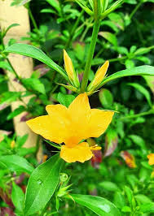
ID: #toga7
7. Landep
Rematik
Dosis: Tumbuk daun segar, balurkan pada bagian yang sakit.
ID: #toga7
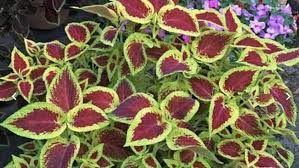
ID: #toga8
8. Miana
Wasir
Dosis: Rebus 15 lembar daun dengan 2 gelas air hingga sisa 1 gelas.
ID: #toga8
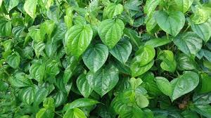
ID: #toga9
9. Daun Sirih
Antiseptik
Dosis: Rebus 3-5 lembar daun, gunakan airnya untuk cuci luka.
ID: #toga9
10. Kayu Manis
Sesak Nafas
Dosis: Seduh 1 batang kecil dengan air panas 200ml.
ID: #toga10
11. Brotowali
Diabetes/Demam
Dosis: Rebus 10cm batang dengan 3 gelas air sisa 1 gelas.
ID: #toga11
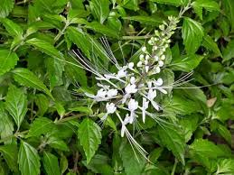
ID: #toga12
12. Kumis Kucing
Infeksi Saluran Kemih
Dosis: Rebus 1 genggam daun dengan 2 gelas air.
ID: #toga12
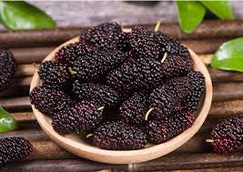
ID: #toga13
13. Murbei
Kolesterol
Dosis: Rebus 10 lembar daun segar dalam 2 gelas air.
ID: #toga13

14. Daun Salam
Kolesterol/Maag
Dosis: Rebus 10-15 lembar daun dengan 3 gelas air sisa 1 gelas.
ID: #toga14
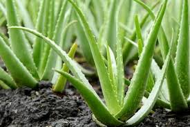
ID: #toga15
15. Lidah Buaya
Luka Bakar
Dosis: Oleskan gel bagian dalam daun pada luka bakar ringan.
ID: #toga15
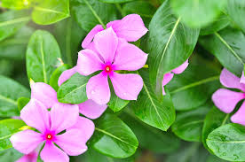
ID: #toga16
16. Tapak Dara
Diabetes
Dosis: Rebus 7 lembar daun dengan 2 gelas air.
ID: #toga16
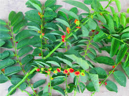
ID: #toga17
17. Daun Katuk
Melancarkan ASI
Dosis: Konsumsi sebagai sayuran masak secara teratur.
ID: #toga17
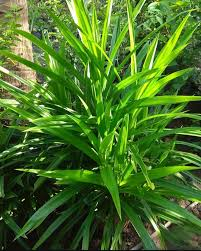
ID: #toga18
18. Daun Pandan
Darah Tinggi
Dosis: Rebus 2 lembar daun, minum airnya selagi hangat.
ID: #toga18
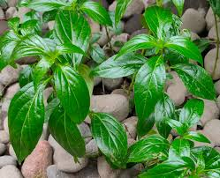
ID: #toga19
19. Sambiloto
Antibiotik Alami
Dosis: Rebus 10-15g daun kering, minum air rebusannya.
ID: #toga19
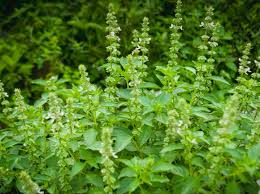
ID: #toga20
20. Kemangi
Bau Badan
Dosis: Makan segenggam daun segar sebagai lalapan.
ID: #toga20
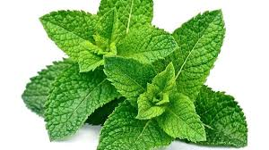
ID: #toga21
21. Daun Mint
Mual/Nafas
Dosis: Seduh 5 lembar daun segar dengan air panas.
ID: #toga21
Bagian Akar & Rimpang
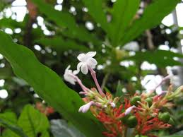
ID: #toga22
22. Pule Pandak
Darah Tinggi
Dosis: Seduh 100mg bubuk akar kering dengan air panas.
ID: #toga22

23. Jahe
Asma/Hangat
Dosis: Geprek 2 ruas jahe, rebus dengan 1 gelas air.
ID: #toga23
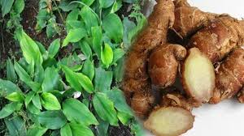
ID: #toga24
24. Kencur
Sakit Kepala
Dosis: Parut 2 ruas kencur, peras, tambahkan sedikit garam.
ID: #toga24

25. Kunyit
Hepatitis/Diare
Dosis: Parut 1 ruas kunyit, seduh air hangat, saring.
ID: #toga25
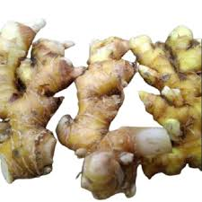
ID: #toga26
26. Lempuyung
Nafsu Makan
Dosis: Parut rimpang, seduh dengan air hangat.
ID: #toga26

27. Lengkuas
Panu/Jamur
Dosis: Gosokkan irisan rimpang pada kulit yang berjamur.
ID: #toga27
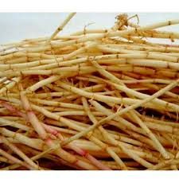
ID: #toga28
28. Alang-alang
Pelancar Urine
Dosis: Rebus 1 genggam akar dengan 2 gelas air sisa 1 gelas.
ID: #toga28
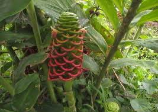
ID: #toga29
29. Bangle
Sakit Kepala
Dosis: Parut rimpang, gunakan sebagai kompres di dahi.
ID: #toga29

30. Akar Pepaya
Obat Cacing
Dosis: Rebus 1 ruas akar dengan 1 gelas air, saring.
ID: #toga30
Bagian Biji
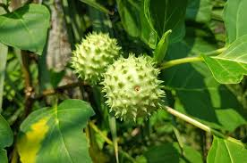
ID: #toga31
31. Kecubung
Asma (Luar)
Dosis: Obat luar saja. Jangan ditelan (beracun).
ID: #toga31
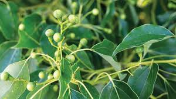
ID: #toga32
32. Kapur Barus
Gatal-gatal
Dosis: Larutkan dalam minyak kelapa, oles pada area gatal.
ID: #toga32
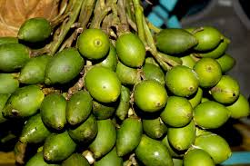
ID: #toga33
33. Pinang
Obat Cacing
Dosis: Rebus irisian 1/2 biji pinang tua dengan 2 gelas air.
ID: #toga33
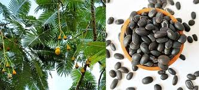
ID: #toga34
34. Kedawung
Mulas/Diare
Dosis: Sangrai biji, haluskan, seduh 1 sdt dengan air panas.
ID: #toga34

35. Pala
Insomnia
Dosis: Seduh sedikit parutan biji pala dengan air hangat.
ID: #toga35
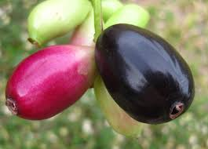
ID: #toga36
36. Jamblang (Biji)
Diabetes
Dosis: Tumbuk biji kering, seduh 1 sdm bubuknya.
ID: #toga36
Bagian Buah
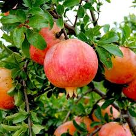
ID: #toga37
37. Delima
Cacing Pita
Dosis: Rebus kulit buah delima kering, minum airnya.
ID: #toga37

38. Jeruk Nipis
Batuk/Demam
Dosis: Peras 1 buah, campur madu/kecap, minum 3x sehari.
ID: #toga38
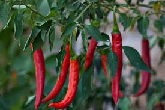
ID: #toga39
39. Cabai Merah
Rematik (Luar)
Dosis: Tumbuk buah, campur minyak, balurkan pada area sakit.
ID: #toga39
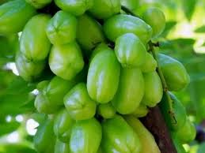
ID: #toga40
40. Belimbing Wuluh
Darah Tinggi
Dosis: Rebus 3 buah belimbing wuluh, minum air rebusannya.
ID: #toga40
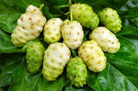
ID: #toga41
41. Mengkudu
Amandel/Liver
Dosis: Parut buah matang, peras airnya, minum dengan madu.
ID: #toga41
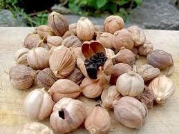
ID: #toga42
42. Kapulaga
Mual/Kembung
Dosis: Rebus 5 butir buah kapulaga, minum airnya.
ID: #toga42
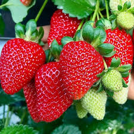
ID: #toga43
43. Stroberi
Kesehatan Gigi
Dosis: Hancurkan 1 buah, gosokkan pada gigi untuk pemutih.
ID: #toga43